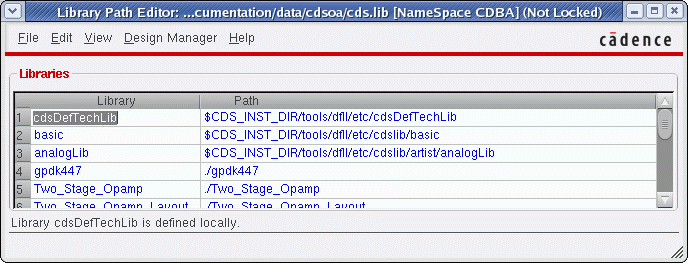
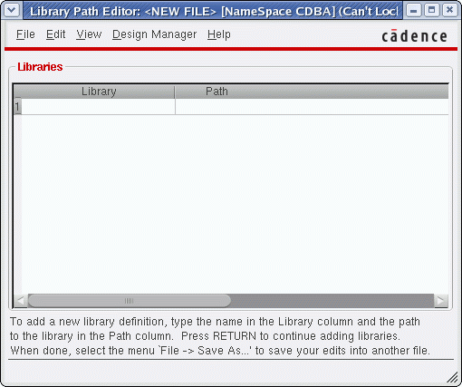
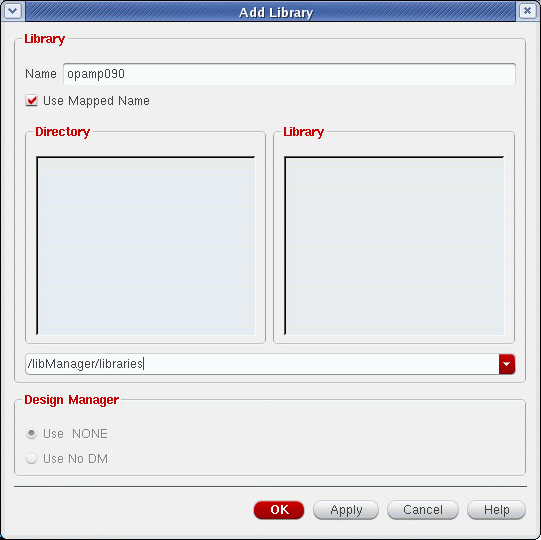
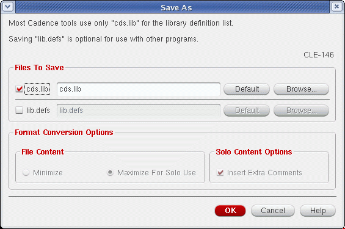
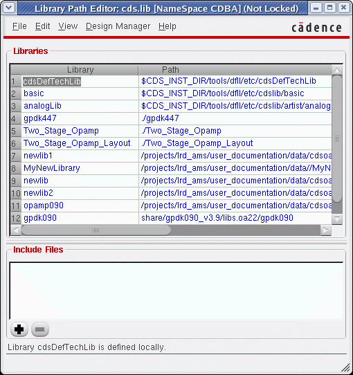
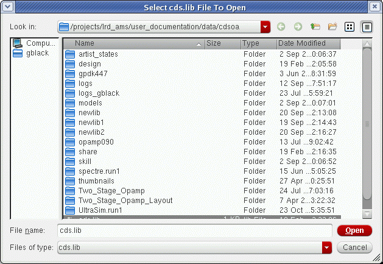
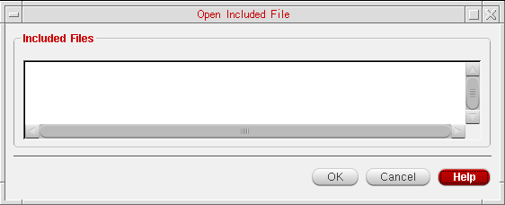
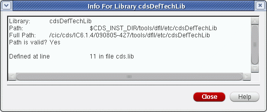
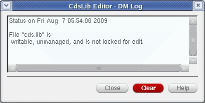

1
Using the Library Path Editor
The following topics are discussed in this chapter:
- About the Library Path Editor and cds.lib
- Opening and Closing the Library Path Editor
- Creating Library Definitions Files
- Adding Libraries to a Library Definition File
- Working with Library Definitions Files
- Keywords and Syntax of Library Definitions Files
- Log File
Read First: Library Definition Files in IC614
From IC614, lib.defs library definition files are no longer supported in Virtuoso. The only supported format now being cds.lib.
A new CdsLib plugin (release 31.09) allows for OpenAccess applications to read cds.lib files, where previously they required to use lib.defs.
lib.defs files.
This Cadence Library Path Editor User Guide therefore places focus on the use of cds.lib files. It should be noted however that where lib.defs are still being used, the commands and instructions documented in this manual will, in most cases, still be applicable. Again though, Cadence actively encourages the use of cds.lib files as library definition files.
lib.defs files may still be optionally saved for use with other, non-Cadence programs, or OpenAccess tools that do not have the CdsLib plugin.About the Library Path Editor and cds.lib
The library path editor (cdsLibEditor) enables you to view and edit the information in a cds.lib library definition file.
A cds.lib file is needed to point to the reference and design libraries you want to use in your design.
For more information about cds.lib refer to the Cadence Application Infrastructure User Guide.
Opening and Closing the Library Path Editor
Opening the library path editor
The library path editor opens from the UNIX command line and Cadence® tools such as the Virtuoso® design environment’s Command Interpreter Window (CIW).
To open the library path editor from the UNIX command line,
-
Type
cdsLibEditor [ -namespace namespace] &
where namespace is the set of rules defining valid identifier and keyword types for the design tool in use (the default isCDBA).
To open a cds.lib library definition file in the library path editor, use the following commands:
To open the library path editor from the CIW,
The library path editor window opens and presents library path information in one of the following ways:
-
Displaying the libraries and their paths that are defined in
cds.libfiles.
 -
Displaying the Select New File Format form because a
cds.libfile does not exist in your design hierarchy. In this situation a library definition file needs to be created.
See Creating Library Definitions Files.
Closing the library path editor
To close the library path editor,
-
Choose File – Exit.
If you have not saved changes, a dialog box asks you whether you want to save your changes. - Do one of the following:
Creating Library Definitions Files
If your design directory does not contain library definitions files, you can create them:
-
Using the File – New command in the library path editor.
- In the Select New File Format form, choose one of the following:
-
Click OK.
The library path editor displays blank Library and Path fields.
 -
Add libraries using the Edit – Add Library command.
 - Locate the library to be added and then click OK.
-
Create the missing file by choosing File – Save As.
 - Click OK to create the library.
-
Copy an existing
cds.libfile into your working directory. -
Create a
cds.libusing a text editor.
See Keywords and Syntax of Library Definitions Files.
Example keywords and paths:
INCLUDEyour_install_dir/share/cdssetup/cds.lib
where your_install_dir is the path to the installation directory.
DEFINEyourLibraryName/tools/etc/cdslib/libraryName
where yourLibraryName is the name you wish to apply to the library, your_install_dir is the path to your installation directory, and libraryName is the name of the library you are adding to the newcds.libfile.Names must follow namespace rules. Refer to the Cadence Application Infrastructure User Guide for details.
Adding Libraries to a Library Definition File
To add a library to a library definition file:
- Choose File – Open in the Library Path Editor window.
- Select the cds.lib file in the File Open form.
-
Click OK.
The library path editor displays the contents of the files. -
Choose Edit – Add Library.
The Add Library form appears. - In the Name field, type the name of the existing or new library you want to add.
-
Select the path to the library using the Directory and Library list boxes or type the path into the type-in field below the list boxes.
You can click the directory names in the Directory list box to move up and down in the directory hierarchy. Only library directories containing a validcdsinfo.tagfile appear in the Library scrolling list box. (For more information about thecdsinfo.tagfile, see the Cadence Application Infrastructure User Guide.)The library added is the library specified in the Name field with the path shown in the Directory list box. Be sure that the path shown in the field below the Directory list box does not include the library name; if it does, the library path editor will create a directory with the same name as the library, plus the library. For example, if you specify the path/usr1/lib_dir/lib1wherelib1is the library name you specify in the Name field, the library path editor will create the library/usr1/lib_dir/lib1/lib1. -
Select Use Mapped Name if you want to map a directory name that appears in the Library list back to the application’s name space. The mapped name is displayed in the Name field. If this option is not selected, the directory name is added the way it is.
For example, if you created a librarysample.libwith a Cadence application, it would have been mapped tosample#2elibin the file system. When you try to add that library in the Add Library form, the Library list box displays the file system name:sample#2elib. If you select the Use Mapped Name option, the library is mapped back and is added assample.lib; otherwise, the library is added assample#2elib. -
In the Design Manager section, select a design management system or Use No DM if you do not want the library to be managed.
-
Click OK.
The library name and path appear in the library path editor window. -
Choose File – Save As (see also Locking the File for Editing).
Ensure that thecds.libfile has a check mark next to it in the Save As form.
Open Both the cds.lib and lib.defs Files
If you choose to open both the cds.lib and lib.defs file in the File Open form, this will display the Open Both Library Definitions Files form. From here you will be asked to confirm that action.
Choosing to open both the cds.lib and lib.defs files will result in their contents being synchronized on a successful save. Here, the lib.defs file content will override that of the cds.lib content.
Importing a lib.defs File
To import a lib.defs file, select File – Import “lib.defs”. This will display the Import lib.defs form.
From here, you can continue to choose to import a lib.defs file, but are warned that the lib.defs file content may be obsolete (see Read First: Library Definition Files in IC614) and that it would also override any content from the cds.lib file.
Deleting Libraries
To delete a library from the Library Path Editor window,
- Choose File – Open in the library path editor form.
- Select the file from the File Open form.
- Click OK.
- Click a library name you want to delete.
-
Choose Edit – Remove Library Definition.
The library is deleted from the library path editor window -
Choose File – Save As (see also Locking the File for Editing).
Ensure that thecds.libfile has a check mark next to it in the Save As form.
cds.lib is being removed. This action will however prevent the library from being accessed from other tools that use the same cds.lib. Other tools, or sessions, can continue to use the same library data if they are using a different definitions file, or if the cds.lib is re-edited to again have access to the library data.Including an Existing Library Definitions File
To include another library definitions file in your library definitions file,
-
Choose View – Include Files.
An Include Files list box appears at the bottom of the library path editor window, which displays the names of all library definitions files currently referenced by the library path editor.
 - Click the plus (+) sign to open the Include cds.lib File form.
-
In the form, specify the library definitions file that you want to include by selecting it or by typing its path in the File name field or by a combination of the two.
-
Click Open.
The name of the file appears in the Include Files list box in the library path editor window. The libraries defined in the file appear in the Libraries list. -
Choose File – Save As (see also Locking the File for Editing).
Ensure that thecds.libfile has a check mark next to it in the Save As form.
Deleting Included Files
To delete an included file from the library path editor and from your library definition files,
- Choose View – Include Files.
- In the Include Files list box, click a path.
-
Click the minus sign.
The path to the included file is removed from the Include Files list box and the names and paths of libraries in the included file are removed from the Library and Path list boxes. -
Choose File – Save As (see also Locking the File for Editing).
Ensure that thecds.libfile has a check mark next to it in the Save As form.
Locking the File for Editing
You can lock the cds.lib file that is currently open in the library path editor to prevent other users from modifying it while you are editing it.
The file is locked. The window banner indicates that it is locked. Also, the File – Save command is now available (this command is usually grayed-out when the file is not locked and you need to use File – Save As instead.)
-
Choose Edit – Exclusive Lock again. File – Save is not used in the documentation examples included in this manual as its action requires a lock. Locking a
cds.libfile can however confuse other Cadence applications that have not been designed to handle, or are aware of, any file modifications directly. For example, the creation, deletion or renaming of a library requires re-write access to thecds.lib, and the operation will likely fail if thecds.libis locked by an active Library Path Editor session over a long period.
To enable the new transient edit lock mode, add the following environment variable in the .cdsenv file:
cdsLibEditor.main transientSaveLocks boolean t
Using this environment variable, the file is locked transiently only during the Save process.
However, if the above environment variable is set to nil, the Save command will be disabled until the exclusive lock is obtained.
cdsLibEditor.main transientSaveLocks boolean nil
To remove the exclusive lock, add the following environment variable in the .cdsenv file:
cdsLibEditor.main autoExclEdit boolean nil
To set the exclusive lock by default, add the following environment variable in the .cdsenv file:
cdsLibEditor.main autoExclEdit boolean t
To turn off the popup messages, add the following environment variable in the .cdsenv file:
cdsLibEditor.main warnExclLock boolean nil
Working with Library Definitions Files
Displaying Duplicate Library Entries
If you use include statements, you might have the same library defined multiple times in your library definition files, which will cause some applications to generate error or warning messages. Because inclusion can be nested, it is simple to accidentally set up the system to define a library more than once. For example:
INCLUDElocationA/global.libs
INCLUDElocationB/global.libs
Every library will be defined at least twice in the above example.
The duplicate entries are displayed in the library path editor window. You can use this feature to trace multiple entries to their sources.
Listing Locally Defined Libraries
To list only locally defined libraries in the Library column in the Library Path Editor,
-
Choose View – Local Defines Only.
The names of libraries listed in any included files are not displayed in the Library list box in the library path editor window.
Opening and Using Multiple Library Definitions Files
To display another cds.lib file in the library path editor window,
-
Choose File – Open.
Thecds.libfiles in your working directory are displayed. These are the default selections. To look in another directory for a differentcds.lib, click the Browse button.
The Select cds.lib File To Open form is displayed.
 -
In the form, specify the library definitions file that you want to include by selecting it or by typing its path in the File name field or by a combination of the two.
You can use the Files of type field to filter files—you can choose to display only library definition files in the selected directory or all files. -
Click Open.
The file you choose appears in the Library Path Editor window. This file is used in your design session.
If you do not have permission to write to the library definitions file, a message appears, indicating that the file you specified is in read-only mode and you cannot make any changes to it.
Using Included Files
You can open included cds.lib files for use in your design. Included files are other library definitions files that have been included in your library definitions files.
To open an included library definitions file in the library path editor,
-
Choose File – Open Include.
The Open Included File form lists the files included in yourcds.libfile.
 - Select an included file.
-
Click OK.
The file you select appears in the Library Path Editor window as the current library definition file.
Switching Between Library Definitions Files
Every library definition file that you have called up in a design session is available for editing during that design session.
To edit a cds.lib file that you have viewed previously in a design session,
-
Choose File – File History.
Thecds.libfile you have called up in the current design session appear in a submenu. -
Select the file you want to use.
The Library Path Editor window changes to display the file you select.
Viewing Full Paths
To display the full path of libraries in the Library Path Editor window,
The paths from the cds.lib files are expanded to absolute paths and displayed.
This is a toggle command; choose View – Full Paths again to deselect the command.
Finding Library Path information
To locate information about a library name or library path,
- Click the library name or path you want information on.
-
Choose View – Library Info.
The Info For Library form appears, and shows the library name and path, whether the path is correct, and the line in the library definitions file where the library is defined.
 - Click Close to exit the form.
Viewing File Status
You can view the managed status of the cds.lib files that are currently open in the Library Path Editor.
-
Choose Design Manager – Show File Status.
The following form appears:
The form displays information about each file: whether it is managed by a design management system, whether it is locked, and whether you have write permission for the file. - (Optional) Click Clear if you want to clear the status information of the files and close the form. By default, the status information is retained and every time you display the form, the new status information is appended to the existing information.
- Click Close to close the form. The status information of the files is retained. The next time you display the form, the new status information is appended to the existing information.
Pop-up Menus
You can access some of the Library Path Editor commands quickly by using the pop-up menus.
Toolbar
You can access some of the Library Path Editor commands quickly from the toolbar.
The toolbar is displayed at the top of the library path editor window.
You can move the toolbar to any side of the window.
Color Definitions
The color legend is the key to what the colors represent in the library path editor.
The Color Definitions form appears.
Error messages
-
Bad Include Path
The path to the include file is not valid. An invalid include path ends with an existing directory name or the name of a file that is not a standard ASCII file. -
Bad Library Path
The library path does not exist.-
Click OK.
The library name and path you specified appear on the Add Library form. You cannot change the name but you can change the path. -
Click Apply or OK.
The new library is created in the directory specified. The library name and path appear in the library path editor window. If, however, you try to create a new library in a directory to which you do not have write permission, or if you type a path rather than a single name in the Name field, an error message tells you that the directory could not be created.
-
Click OK.
-
Directory Doesn’t Exist
The path you entered does not correspond to an existing directory structure.-
To continue, click OK.
Specify whether you want to add a library and the library path.
If you type the name of a library that is already listed in the library definitions file as an included file, the error message tells you that it is removing the definition of that library as an included file and redefining it as a regularly defined file.
-
To continue, click OK.
-
Invalid Library Name Specified
The library name is not valid in the current namespace.-
Click OK. Type a valid library name.
Sometimes, however, the library path editor can and will map the name to a valid name and displayLibrary Name Has Been Mappedindicating that it has done so.
Mixed-case names are sometimes mapped to a lowercase definition. VHDL does allow mixed-case names; you must type the appropriate escape character before and after the name.
-
Click OK. Type a valid library name.
-
Invalid Library Path Specified
The path is invalid. Paths cannot include spaces (unless enclosed in quotation marks), semicolons, tabs, newlines, or deletes.
For example, the space in the path./lib dir/path2is invalid. -
Library Definition Already Exists
The library name has already been defined with a path. -
No Directory Path
You did not specify a library path. -
No Library Name
You did not specify a library name.
Keywords and Syntax of Library Definitions Files
For information about the keywords and syntax used in cds.lib and lib.defs files, see Chapter 5, “Cadence Library Definition File” of the Cadence Application Infrastructure User Guide.
Log File
When you run the library path editor, a log file called cdsLibEditor.log is created in your current working directory. This file records the commands used in your library path editor session.
Return to top